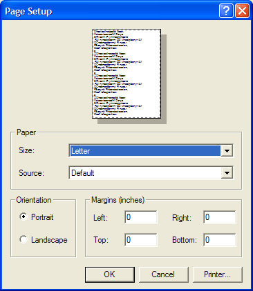

Printing SVG Files
An SVG print job can be started from two different locations. Either by clicking
on the 'Print' button (or menu item) in the 'SVG Preview' view or by opening an
SVG file in an editor and then using the 'File / Print ...' menu item in the
workbench menu bar. Once a print job gets triggered a small dialog will pop up
asking the user for several common printing options (portrait, landscape).
